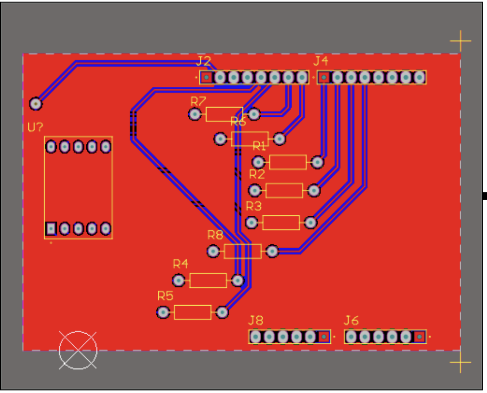
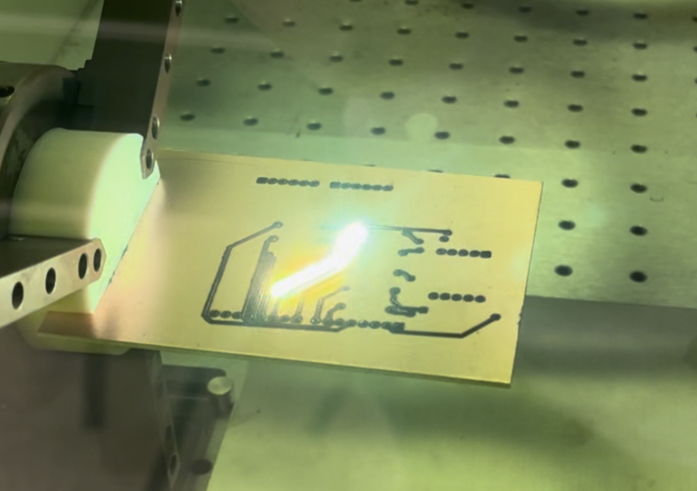
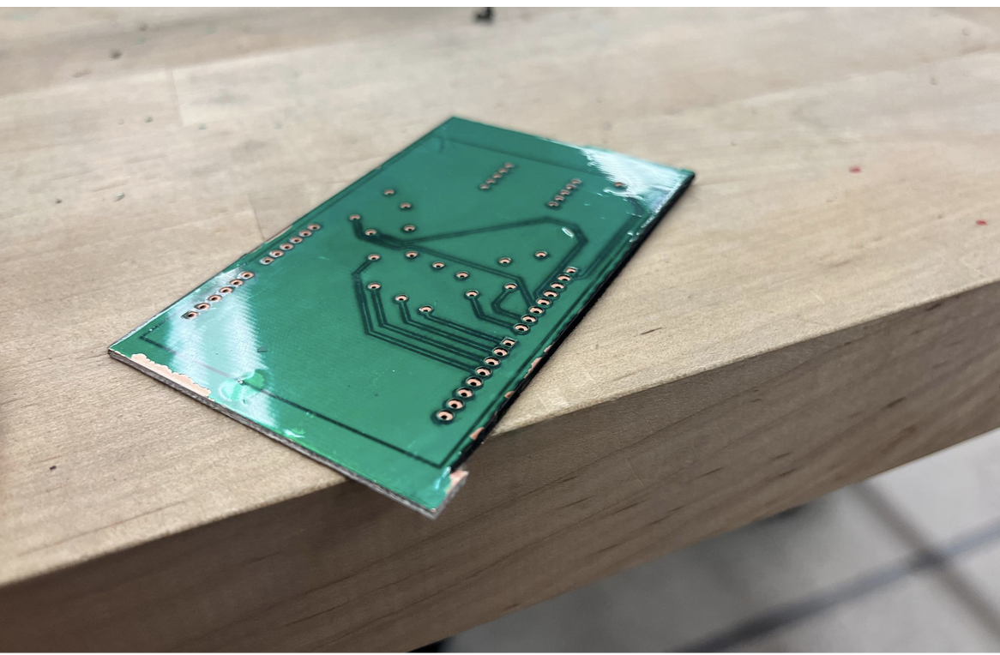
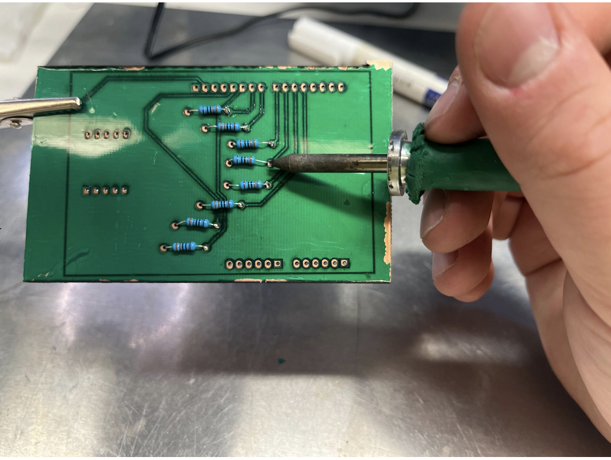
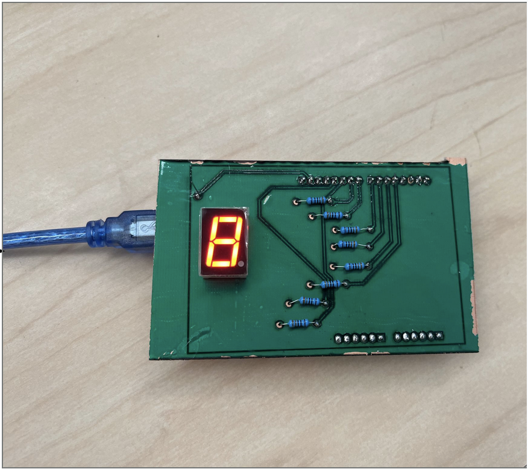

My first project in the group was to create a toolchain for manufacturing PCBs in the lab using a fiber laser to etch boards of copper-coated FR4. I came up with a way to move each individual layer into illustrator, and reassemble the layers so that they were lined up correctly and could be exported to the laser cutter. I then was able to experiment with settings on the laser cutter until I came up with settings that allowed for cutting a minimum of 8 mil (200 micron) width traces into the copper plated boards. Similarly, I was able to reliably cut a 8 mil separation between traces on the board. These results are on par with industrial PCB manufacturers and meant that we could use this method for prototyping PCBs in the lab without needing to order them from a manufacturer which adds significant lead time to every project. I displayed my results in a poster session.